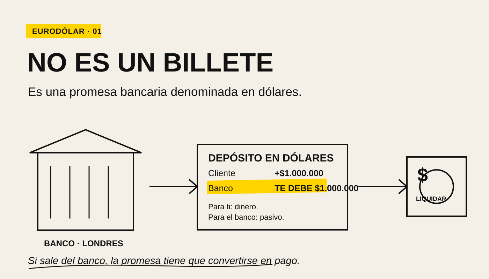
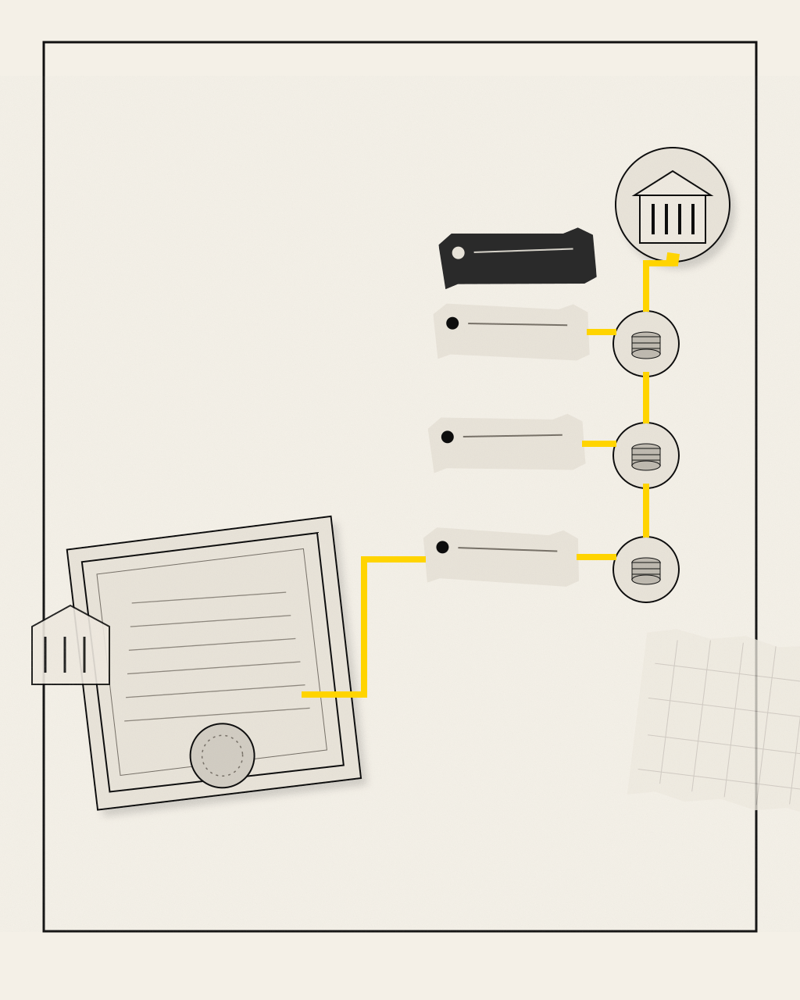

Abres una cuenta en dólares en un banco de Londres. La pantalla dice: $1.000.000.
Pregunta incómoda: si no estás en Estados Unidos, ¿dónde están exactamente esos dólares?
No hay un millón de billetes viajando en avión con una maleta ridícula. Tampoco hace falta que la Reserva Federal haya abierto una cuenta a tu nombre. Lo que tienes es una promesa bancaria denominada en dólares.
Y esa idea —un banco fuera de Estados Unidos que debe dólares a alguien— es el punto de partida del eurodólar.
PRIMERO: EL NOMBRE ES UNA TRAMPA
Un eurodólar, en el sentido clásico, es un depósito denominado en dólares estadounidenses registrado en un banco fuera de Estados Unidos. El mercado eurodólar es la red de depósitos, préstamos y financiación en dólares que se desarrolló alrededor de esos balances offshore.
“Euro” no significa que tenga nada que ver con la moneda euro. El mercado empezó a crecer en Londres en los años cincuenta, décadas antes de que el euro existiera. Y un depósito en dólares en Tokio, Singapur o las Islas Caimán puede formar parte de la misma lógica.
↗ El euro llegó tarde a su propio nombre.
PERO ¿CÓMO PUEDE UN BANCO DE LONDRES “TENER” DÓLARES?
Porque un depósito bancario no es una pila de billetes. Es un pasivo del banco. Si tu banco londinense muestra $1.000.000 en tu cuenta, la frase contable es: “este banco te debe un millón de dólares”.
Eso ya debería sonar familiar. En el dinero moderno, gran parte de lo que usamos son depósitos: promesas de bancos que normalmente se convierten y liquidan a la par con otras formas de dinero.
Ahora cambia euros por dólares y mueve el banco fuera de Estados Unidos. La lógica del pasivo sigue siendo la misma. Lo que cambia es la arquitectura necesaria para liquidarlo.

CREAR UN DEPÓSITO NO ELIMINA LA LIQUIDACIÓN
Aquí está la parte que suele romper la intuición.
Un banco fuera de Estados Unidos puede conceder un préstamo en dólares y crear simultáneamente un depósito en dólares en su balance, igual que un banco doméstico crea depósitos cuando presta. Eso expande crédito y pasivos denominados en dólares.
Pero si el cliente envía esos dólares a otra entidad, el banco tiene que cumplir la promesa. Puede hacerlo usando saldos en bancos corresponsales, financiación interbancaria, repo, swaps de divisas u otras fuentes de liquidez en dólares.
Y cuando la cadena de pagos necesita liquidar entre participantes conectados al sistema estadounidense, aparecen bancos con cuentas de reserva en la Reserva Federal. No todos los eurodólares son reservas de la Fed. Pero la capacidad de convertirlos y liquidarlos a la par depende, en última instancia, de una infraestructura que sí conecta con el sistema dólar estadounidense.
UN EJEMPLO: UNA EMPRESA PIDE $100 MILLONES EN LONDRES
Una multinacional europea necesita dólares para pagar proveedores estadounidenses. Un banco en Londres le concede un préstamo de $100 millones.
En el balance del banco aparecen dos cosas: un activo —la empresa le debe $100 millones— y un pasivo —la empresa tiene un depósito de $100 millones—.
Mientras ese dinero se mueve dentro del mismo banco, basta con contabilidad interna. Cuando la empresa paga al proveedor en otro banco, el banco londinense tiene que transferir valor en dólares hacia fuera. Ahí la pregunta deja de ser “¿puede escribir el número?” y pasa a ser “¿puede financiar y liquidar la salida?”.
Esa diferencia es exactamente la misma que vimos al explicar quién crea realmente el dinero: crear un depósito y ser capaz de liquidar todos los pagos que salgan de tu balance son problemas relacionados, pero no idénticos.
¿POR QUÉ NACIÓ ESTE MERCADO?
La versión de sobremesa dice que los soviéticos querían guardar dólares lejos del alcance de Estados Unidos y así apareció el eurodólar. Hay algo de historia geopolítica ahí, pero como explicación completa se queda corta.
La investigación histórica del BIS sitúa el crecimiento del mercado offshore en una mezcla bastante más poderosa: comercio internacional, demanda global de dólares, competencia bancaria y diferencias regulatorias.
Durante los años cincuenta y sesenta, ciertas reglas estadounidenses hacían más costoso captar y prestar algunos fondos dentro del país. Los bancos en Londres podían operar depósitos en dólares sin exactamente las mismas restricciones de tipos, reservas y seguros de depósitos. Eso abría un hueco: pagar algo más al depositante, cobrar algo menos al prestatario o ambas cosas.
En 1955 ya había bancos de Londres ofreciendo depósitos en dólares por encima de los techos de tipos vigentes en Estados Unidos. En los sesenta, grandes bancos estadounidenses empezaron a usar sus oficinas extranjeras para captar financiación en dólares. El mercado dejó de ser una curiosidad y se convirtió en infraestructura.
¿ENTONCES ERA SOLO ARBITRAJE REGULATORIO?
No. El arbitraje ayudó a arrancar y acelerar el sistema, pero no explica por qué sobrevivió a muchas de las reglas que lo originaron.
El dólar se convirtió en la moneda dominante del comercio, la financiación y los mercados internacionales. Empresas que no son estadounidenses facturan en dólares. Gobiernos emiten deuda en dólares. Bancos prestan en dólares. Fondos compran activos en dólares. Todo eso crea demanda de financiación y de depósitos en la misma unidad.
Según la Reserva Federal, en 2024 alrededor del 55% de las posiciones bancarias internacionales y en moneda extranjera por el lado de los activos, y cerca del 60% por el lado de los pasivos, estaban denominadas en dólares. El euro rondaba aproximadamente una quinta parte.
El punto no es memorizar el porcentaje. Es entender la red: el dólar funciona como moneda doméstica de Estados Unidos y, al mismo tiempo, como unidad de cuenta y financiación para una parte enorme del resto del planeta.
¿DE QUÉ TAMAÑO ESTAMOS HABLANDO?
Medir “el mercado eurodólar” con una sola cifra es una invitación a mezclar cosas distintas. El concepto clásico habla de depósitos bancarios offshore. El sistema dólar global de hoy incluye además bonos, repos, derivados y financiación sintética mediante swaps de divisas.
Una referencia útil —más amplia que los eurodólares clásicos— es el indicador de liquidez global del BIS. A cierre de marzo de 2026, el crédito en dólares a prestatarios no bancarios fuera de Estados Unidos alcanzaba $14,7 billones en préstamos bancarios e instrumentos de deuda internacionales.
Eso no significa “hay $14,7 billones de eurodólares”. Significa algo más interesante: existe una masa gigantesca de obligaciones en dólares fuera de la economía estadounidense, y muchas necesitan refinanciarse, cubrirse y liquidarse en la misma moneda.
AHORA VIENE LA PARTE DIVERTIDA: ¿QUIÉN MANDA SOBRE ESOS DÓLARES?
La Reserva Federal controla la moneda base de Estados Unidos y fija las condiciones monetarias de su sistema doméstico. No autoriza préstamo por préstamo a un banco en Singapur ni decide cuánto balance en dólares puede crear una entidad en Londres.
Pero decir “los eurodólares están fuera de la Fed” y terminar ahí también sería falso.
Los bancos offshore necesitan financiar obligaciones en dólares. Los tipos de la Fed afectan el coste de esa financiación. Muchos activos y colaterales se valoran frente a curvas estadounidenses. Y cuando todo el mundo quiere dólares a la vez, la escasez puede aparecer precisamente fuera de Estados Unidos.
Eso fue brutalmente visible en 2008 y volvió a aparecer en marzo de 2020: bancos y otros intermediarios fuera de Estados Unidos necesitaban dólares con urgencia. La Fed amplió sus líneas swap con otros bancos centrales para que esas instituciones pudieran proporcionar dólares a sus propios sistemas financieros.

La ironía es magnífica: un mercado que creció en parte fuera del perímetro regulatorio estadounidense puede, en una crisis, necesitar una válvula conectada al banco central estadounidense.
¿POR QUÉ UNA “ESCASEZ DE DÓLARES” PUEDE EXISTIR SI LOS BANCOS CREAN DEPÓSITOS?
Porque una obligación y el activo necesario para liquidarla no son lo mismo.
Un banco puede tener muchos pasivos en dólares y activos a largo plazo que también están denominados en dólares. Sobre el papel, la moneda coincide. Pero si sus depositantes retiran fondos hoy y los activos cobran dentro de cinco años, tiene un problema de liquidez.
También puede financiar activos en dólares usando mercados a corto plazo o swaps de divisas que debe renovar constantemente. Si esos mercados se cierran, el problema no es que los dólares hayan “desaparecido”; es que conseguirlos hoy, en la forma y el lugar necesarios, se vuelve caro o imposible.
El informe del BIS sobre riesgo de financiación en moneda extranjera publicado en marzo de 2026 insiste precisamente en esa combinación: descalces de liquidez, dependencia de financiación móvil y riesgo de renovación.
Eso conecta el eurodólar con una palabra que en crisis aparece por todas partes: liquidez.
¿Y LOS “EURODOLLAR FUTURES”?
Otro pequeño regalo del vocabulario financiero.
Durante décadas, los futuros Eurodollar de CME fueron contratos muy importantes para negociar expectativas sobre tipos de interés a corto plazo ligados al LIBOR en dólares. No eran futuros sobre un contenedor lleno de depósitos offshore.
Con la desaparición del LIBOR en dólares, CME convirtió en abril de 2023 la mayor parte del interés abierto elegible hacia derivados referenciados a SOFR y retiró los contratos Eurodollar restantes vinculados a LIBOR en junio de 2023.
Así que hoy puedes encontrar “eurodollar” en libros viejos de trading, en historia bancaria y en debates sobre el sistema dólar global, pero no siempre están hablando exactamente de la misma capa.
ESPERA, ME HE PERDIDO−
Un eurodólar es un depósito en dólares registrado fuera de Estados Unidos. El banco que lo emite te debe dólares. Puede crear ese pasivo al prestar, pero si el dinero sale de su balance necesita conseguir liquidez y liquidar dentro de una red que termina conectando con el sistema dólar estadounidense. Por eso el mercado puede crecer fuera de EE. UU. y aun así sufrir cuando escasea la financiación en dólares.
LA RESPUESTA
El eurodólar es la prueba de que una moneda moderna no termina exactamente en la frontera del país que la emite.
Estados Unidos emite la base monetaria del dólar. Pero bancos de todo el mundo pueden crear depósitos, préstamos y otras obligaciones denominadas en dólares. Mientras esas promesas se conviertan y liquiden a la par, para sus usuarios funcionan como dólares.
La pregunta interesante ya no es “¿dónde está el billete?”. Es otra: ¿quién debe dólares a quién, cómo piensa conseguirlos cuando toque pagar y qué ocurre si todos los necesitan al mismo tiempo?
AUDITABLE, SIEMPRE
FUENTES
Documentación institucional y datos utilizados para comprobar definiciones, historia, magnitudes y mecanismos de esta pieza.
- BIS — Seven decades of international banking — Desarrollo histórico del mercado offshore, definición y papel del arbitraje regulatorio.
- BIS — Credit and liquidity creation in the international banking sector — Creación de crédito y liquidez en banca internacional.
- Federal Reserve Board — The International Role of the U.S. Dollar, 2025 Edition — Peso del dólar en banca internacional y líneas swap en episodios de tensión.
- BIS — International banking statistics and global liquidity indicators, end-March 2026 — Crédito transfronterizo y $14,7 billones de crédito en dólares a no residentes.
- BIS CGFS — Foreign currency funding risk and cross-border liquidity — Riesgo de financiación en moneda extranjera, descalces y liquidez de último recurso.
- CME Group — Delisting and Removal of Eurodollar Futures and Options — Transición de contratos ligados a LIBOR hacia SOFR en 2023.
EXPLICAMOS. NO ASESORAMOS.